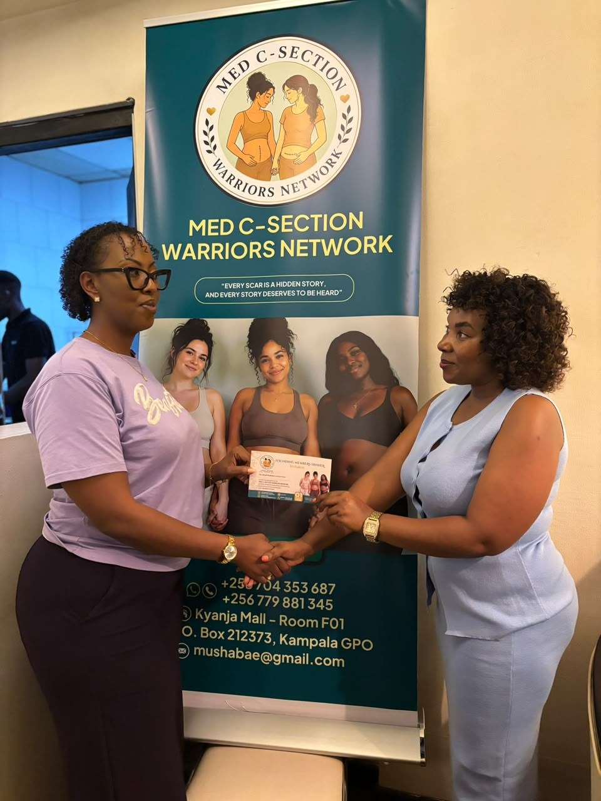
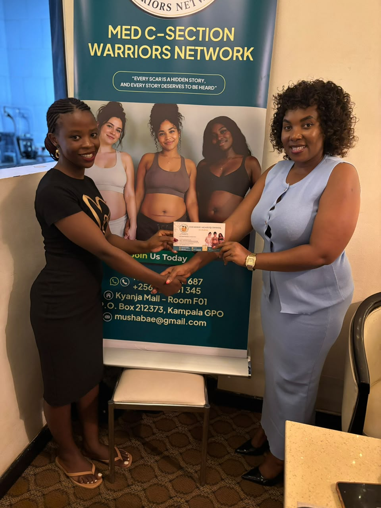
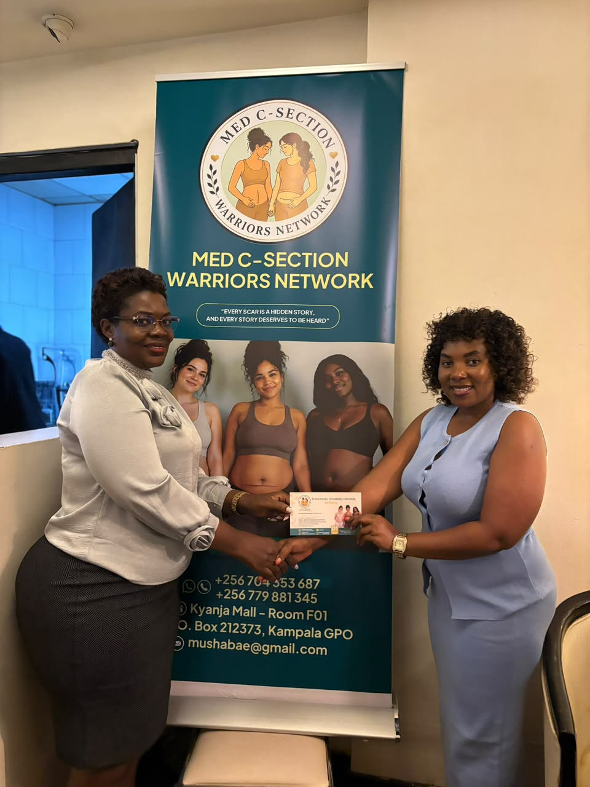
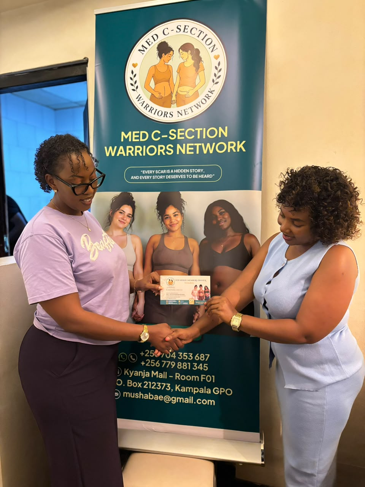
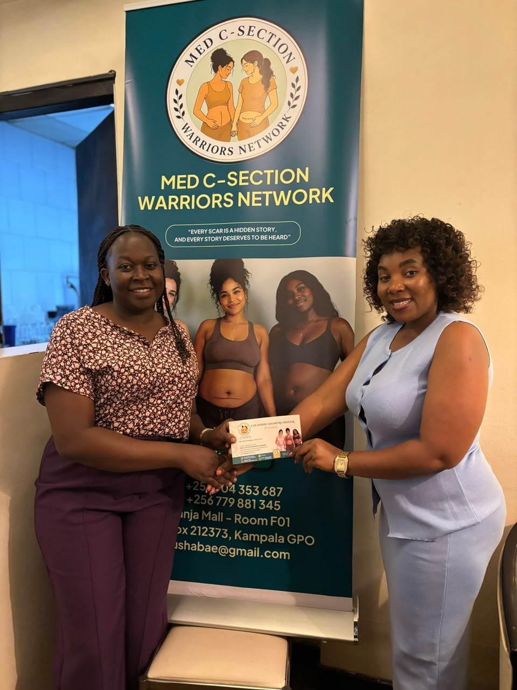
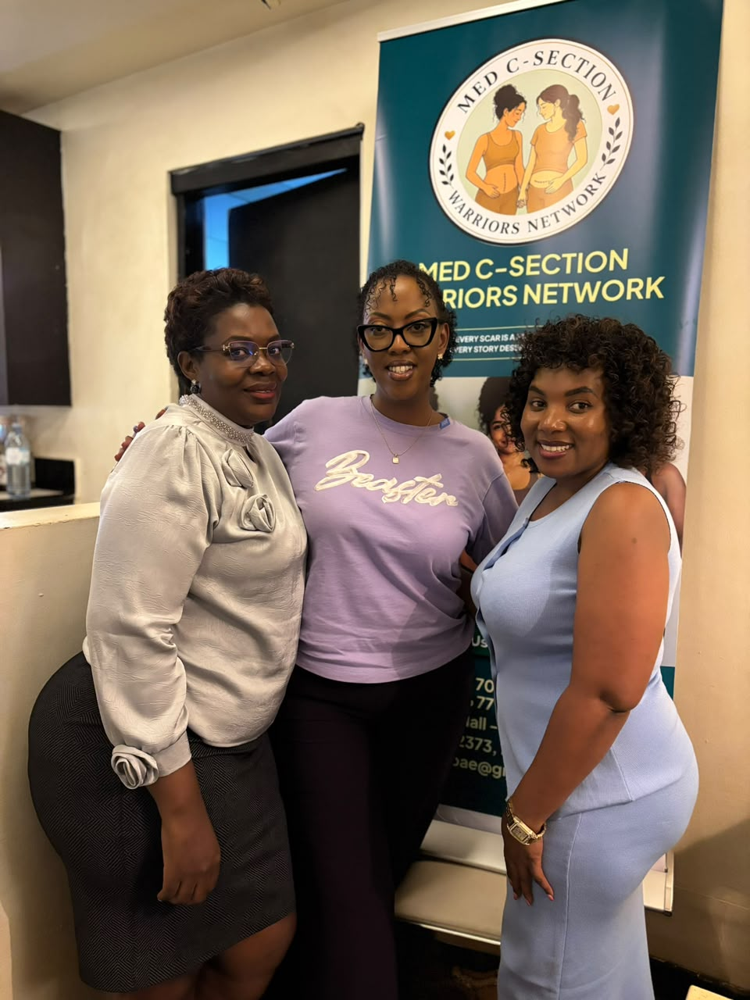
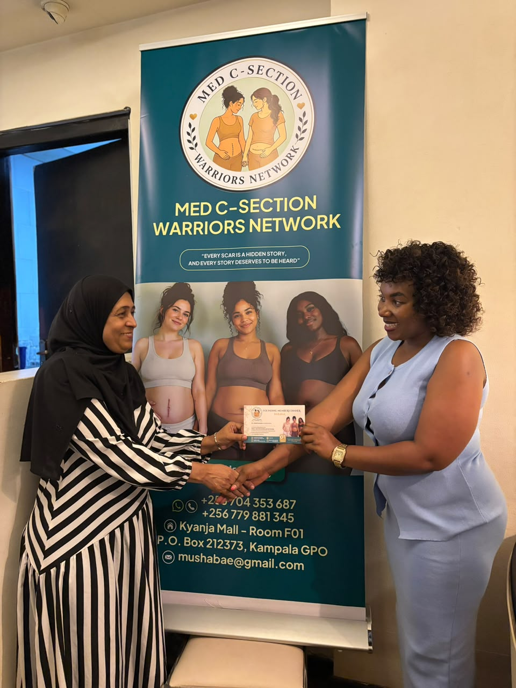

Moments of care, courage, and community
Our gallery
A glimpse into the experiences, learning circles, advocacy work, and joyful milestones that define the MED C-Section Warriors Network.
Community reach
500+ mothers supported through connection, education, and healing.






Join us